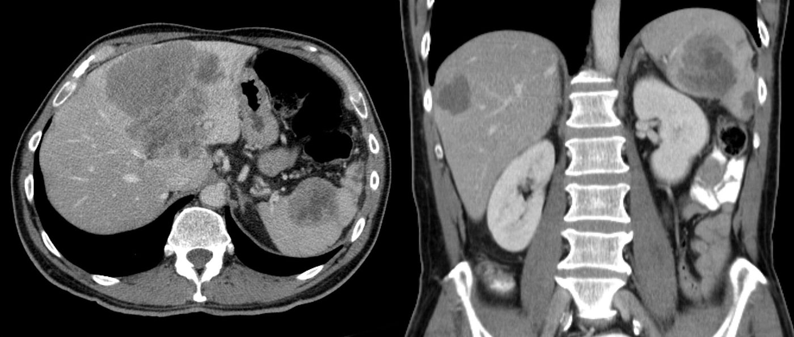
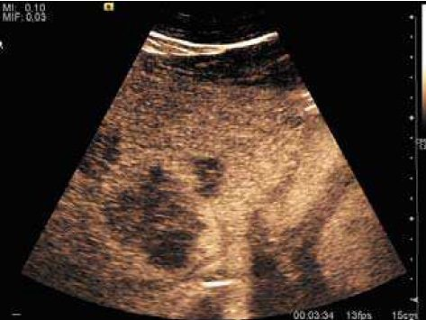
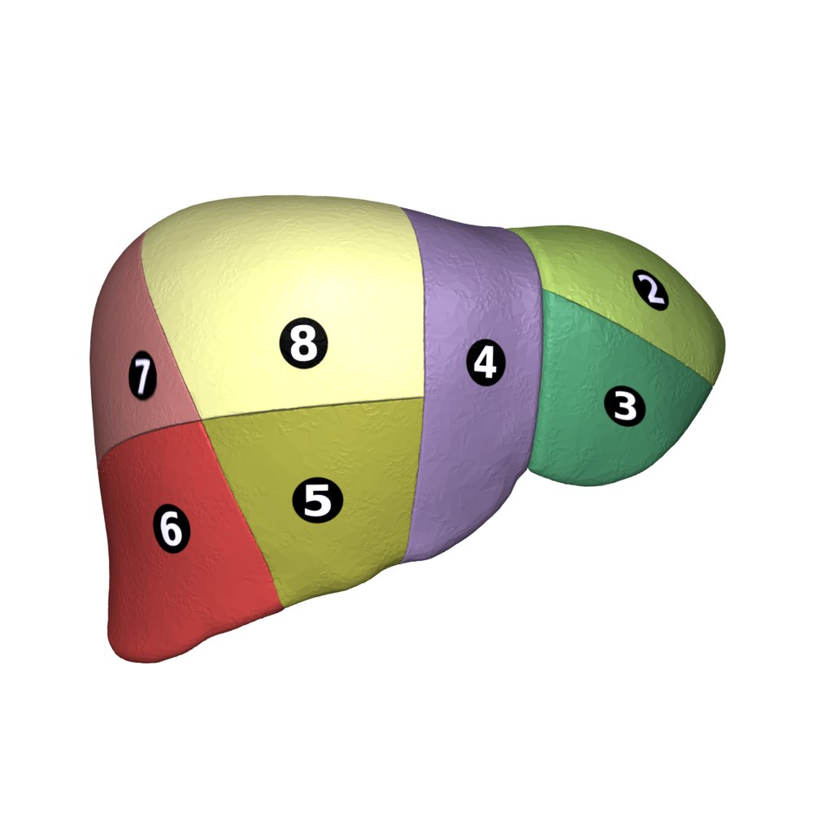

גרורות לכבד מסרטן המעי הגס
מחלה בשלב IV שאפשר לרפא: הדמיה, מי מתאים לכריתה, נפח הכבד שנשאר, כימותרפיה, הסדר מול הגידול הראשוני וטיפולים מקומיים
בסוף המפגש תדעו
- להסביר למה הכבד הוא האתר השכיח לגרורות של סרטן המעי הגס ולמה כריתה יכולה לרפא
- לבנות בירור: CEA, CT רב-פאזי, MRI בכבד שומני ומתי צריך ביופסיה
- להגדיר מה נחשב נתיח ולחשב בגדול את נפח הכבד שיישאר (FLR) ואיך מגדילים אותו
- להכיר את גורמי הפרוגנוזה ואת הסמנים המולקולריים: RAS, BRAF, MSI
- לתכנן את הסדר בין הכבד לגידול הראשוני ואת מקום הכימותרפיה
- להכיר חלופות לכריתה: אבלציה, משאבה עורקית, הקרנה פנימית והשתלה
הכבד והמעי הגס
- למה הכבד? ניקוז ורידי ישיר דרך וריד השער, סינוסואידים עם אנדותל מחורר וסביבה חיסונית סובלנית: "זרע וקרקע"
- סרטן המעי הגס הוא המקור השכיח ביותר לגרורות בכבד. הגרורות האלה הן ההתוויה השכיחה לכריתת כבד בארה״ב
לרוב הכבד שקט
- התסמינים בדרך כלל מהגידול הראשוני (דימום, חסימה). הגרורות עצמן שקטות, אלא אם העומס גדול: כאב, ירידה במשקל, חולשה. חסימה של דרכי המרה: צהבת
- מעבדה: ספירה, כימיה מלאה וקרישה. בילירובין ו-PT עולים: חשד לתפקוד כבד ירוד. טסיות נמוכות: חשד ליתר לחץ דם פורטלי
- CEA: הסמן של סרטן המעי הגס. גם עישון ודלקת כרונית יכולים להעלות אותו
- ביופסיה מהגרורה לא חובה כשהגידול הראשוני ידוע והתמונה מתאימה. רקמה עוזרת לבדיקות מולקולריות ולבחירת טיפול

גרורה בכבד בהדמיה


הסגמנטים ושמות הכריתות

👆 לחצו על חלק בכבד כדי לקרוא עליו
הווריד ההפטי הימני מפריד בינו לבין הסקטור הקדמי. יחד עם 5 ו-8 הם הכבד הימני. כריתת סגמנטים 5–8 נקראת כריתת כבד ימנית (right hepatectomy)
בין הכבד הימני לשמאלי עובר הווריד ההפטי האמצעי, בקו של קנטלי: ממיטת כיס המרה לצד השמאלי של הווריד הנבוב. אין לגבול הזה סימן חיצוני על פני הכבד
חלק מהכבד השמאלי, מימין לחריץ הטבורי. כריתת 2–4 היא כריתת כבד שמאלית. כריתת 4–8 היא כריתה ימנית מורחבת (right trisectionectomy): אז נשארים רק 1–3: כאן נפח השארית הכי קריטי
כריתתם היא left lateral sectionectomy. בכריתה דו-שלבית מנקים כאן קודם את הגרורות, כי זה בדרך כלל הכבד שיישאר. אחרי תסחיף של הווריד הפורטלי הימני הם גדלים
הכבד שנשאר (FLR)
- מחשבים מ-CT או MRI: נפח הכבד שיישאר ביחס לנפח הכבד הכולל (sFLR)
- כריתה חוסכת רקמה עדיפה כשאפשר: אין צורך בשוליים רחבים. בסקירה של יותר מ-2,500 חולים: שיעור R0 והישרדות דומים לכריתה אנטומית
- אולטרסאונד תוך-ניתוחי חובה: מגדיר אנטומיה, מוצא גרורות שלא נראו ומכוון את קו החיתוך
כריתה בשני שלבים
הטיפול הסיסטמי
- קו ראשון: FOLFOX או FOLFIRI, תגובה ביותר מ-50%. bevacizumab משפר הישרדות. נוגדי EGFR רק כש-KRAS תקין
- הפיכה לנתיח: מתוך 1,439 חולים, 77% לא היו נתיחים. 12.5% מהם הגיבו מספיק לכריתה: הישרדות ל-5 שנים 33%, לעומת 48% בנתיחים מראש ו-16% בכימותרפיה בלבד (Adam 2004)
- כימותרפיה סביב הניתוח בנתיחים: שנויה במחלוקת. EORTC 40983 (364 חולים): שיפור בהישרדות בלי התקדמות רק בחולים שנכרתו, בלי הבדל בהישרדות הכוללת (49% לעומת 51%)
- המחקר היפני (300 חולים): כימותרפיה אחרי הכריתה שיפרה הישרדות בלי מחלה ל-5 שנים (50% לעומת 39%) אבל לא את ההישרדות הכוללת
מה קודם: הכבד או המעי?
מי ירוויח מהניתוח?
ציון הסיכון הקליני של Fong (1999, 1,001 חולים)
- שוליים חיוביים בכבד
- בלוטות חיוביות בגידול הראשוני
- פחות מ-12 חודשים מהכריתה הראשונה עד הגרורות
- יותר מגרורה אחת · גרורה מעל 5 ס״מ
- CEA מעל 200
- מחלה מחוץ לכבד
טיפולים מקומיים בכבד
- גידול מתחת ל-3 ס״מ: RFA יכולה להשמיד אותו לאורך זמן
- כלי דם גדולים מקררים את האזור ומפחיתים יעילות
- מיקרוגל: פחות רגיש לזה ואזור גדול יותר. מועדף
- טובה לגרורה קטנה ועמוקה שכריתתה דורשת הרבה כבד
- הגרורות ניזונות כמעט רק מהעורק. FUDR נקלט בכבד ב-94–99%
- הקטטר בעורק ה-GDA
- בלא נתיחים: 47% הגיעו לכריתה מלאה
- סיבוך ייחודי: פגיעה בדרכי המרה. עוקבים אחרי תפקודי כבד
- מיקרו-כדוריות רדיואקטיביות דרך העורקים שמזינים את הגידול
- הוספה לכימותרפיה בקו ראשון לא שיפרה הישרדות
- מוגבלת כשהגידול קרוב למעי או לקיבה
ניתוח קודם או כימותרפיה קודם?
- כל חולה נבדק בידי כירורג כבד כבר באבחנה: נתיח, אולי נתיח, כנראה לא נתיח
- נתיח: ניתוח עם דיון על משאבה עורקית או כימותרפיה אחרי
- כנראה לא נתיח: משאבה עורקית עם כימותרפיה כדי להפוך לנתיח
- מטפלת במיקרו-גרורות שלא רואים
- "מבחן לביולוגיה": מי שמתקדם בזמן הכימותרפיה לא ירוויח מניתוח גדול
- מאפשרת ניתוח חוסך רקמה במקום כריתה גדולה
מחקרים שכדאי להכיר
94 חולים עם גרורות בכבד בלבד, לא נתיחות, שהגיבו לכימותרפיה, בלי BRAF. הישרדות ל-5 שנים 56.6% עם השתלה לעומת 12.6% עם כימותרפיה בלבד (בניתוח לפי הטיפול שניתן: 73.3% לעומת 9.3%)
Adam R et al. Lancet 2024;404:1107-18300 חולים עם עד 10 גרורות של 3 ס״מ לכל היותר. אבלציה לא נחותה בהישרדות (HR 1.05). פחות תופעות לוואי (19% לעומת 46%), אפס תמותה מהטיפול לעומת 2%
van der Lei S et al. Lancet Oncol 2025;26:187-99530 חולים עם גרורות לא נתיחות. בצד ימין או עם RAS/BRAF: FOLFOXIRI עם bevacizumab האריך הישרדות בלי התקדמות (10.6 לעומת 9.0 חודשים), במחיר רעילות. בצד שמאל עם RAS תקין: panitumumab לא עדיף על bevacizumab
Bond MJG et al. Lancet Oncol 2023;24:757-71300 חולים, מעקב חציוני 7.7 שנים. mFOLFOX6 אחרי הכריתה שיפר הישרדות בלי מחלה ל-5 שנים (49.7% לעומת 40.5%), אבל ההישרדות הכוללת לא השתפרה (73.4% לעומת 80.1%)
Kanemitsu Y et al. J Clin Oncol 2026;44:1395-1400חמישה דברים לקחת למחלקה
- גרורות בכבד מסרטן המעי הגס הן שלב IV שאפשר לרפא: כריתה מלאה נותנת כ-50% הישרדות ל-5 שנים
- CT רב-פאזי הוא הבסיס. MRI בכבד שומני. ביופסיה מהכבד לא חובה
- נתיח = כל המחלה יוצאת ונשארים שני סגמנטים רציפים עם זרימה, ניקוז ונפח (20% בכבד בריא, 30% אחרי כימותרפיה)
- אין סדר "נכון" אחד בין הכבד למעי. מחליטים בוועדה עם כירורג כבד
- RAS, BRAF ותגובה לכימותרפיה מספרים על הביולוגיה. הביולוגיה היא שקובעת